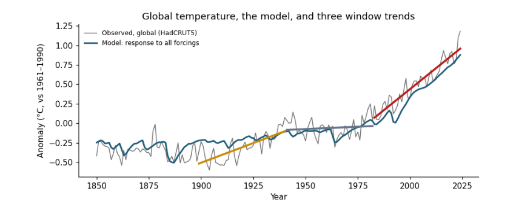
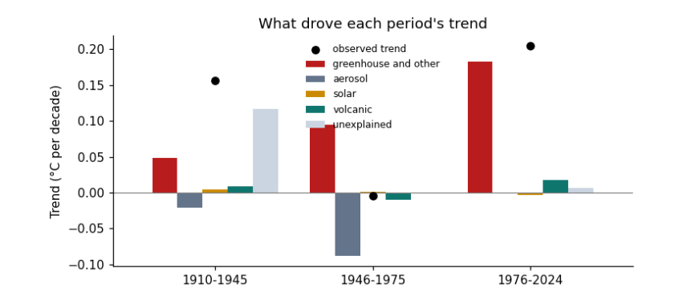

1. Before you start¶
This guide is a notebook you run yourself. It tests a claim made at a conference in November 2026, that the Earth warmed fastest in 1899–1940 when CO~2~ emissions were small, using four public datasets and a few dozen lines of Python. The essay Reading climate data tells the story and the conclusions; this guide shows every step that produced them, so you can repeat, change and extend it.
1.1 What you will learn¶
-
Data: where climate records come from, what a temperature anomaly is, and how to download, inspect and join tables with
pandas. -
Statistics: how a trend line is fitted, by hand and with a library; what a standard error is; why neighbouring years are not independent, and how to allow for it.
-
Physics: what radiative forcing is, and how a two-reservoir energy-balance model turns forcing into temperature.
-
Figures: how to read any chart by naming its parts, and how each line and bar maps to a column of a table.
-
Practice: keeping a record of what each run used, so others can repeat it.
1.2 Getting Python and the notebook¶
You need Python 3.10 or newer with numpy, pandas, matplotlib and scipy. Three ways, from simplest to most flexible:
-
Google Colab, in a web browser, with nothing to install: open the Notebooks page of this guide and choose Open in Colab. Colab already has every library used here.
-
Anaconda or Miniforge on your own computer: install it, then in a terminal run the commands below, and open the downloaded
climate_data.ipynbin the Jupyter window that appears. -
VS Code with its Python and Jupyter extensions: open the
.ipynbfile and choose a Python environment that has the four libraries.
conda create -n climate python=3.12 numpy pandas matplotlib scipy jupyterlab
conda activate climate
jupyter lab
1.3 How to read the cells¶
Each step below is a cell of the notebook. A box labelled In [n] is the code; the box labelled Out [n] under it is what that code printed when the notebook was run, and a figure under Out [n] is what it drew. Run the cells in order from the top: later cells use tables made by earlier ones. If you change something and want to start again, use Restart and run all.
1.4 The question and the libraries¶
A working paper presented at a conference in November 2026 argued that the Earth warmed fastest in 1899–1940, when carbon dioxide (CO₂) emissions were small, and concluded that CO₂ is not the main driver of warming. In this notebook we test that claim ourselves, from public data, one step at a time. By the end you will have downloaded four datasets, joined them into one table, fitted trend lines by hand and with a library, measured how uncertain those trends are, built a small physical model of the climate, and made the figures that answer the question.
Each code cell is followed by its output, exactly as it appeared when this notebook was run. Run the cells in order from the top: later cells use what earlier cells made.
We use four Python libraries. pandas holds tables (rows and columns, like a spreadsheet); numpy does arithmetic on whole columns at once; matplotlib draws figures; and scipy provides statistical tests.
import json
import urllib.request
from pathlib import Path
import numpy as np
import pandas as pd
import matplotlib.pyplot as plt
from scipy import stats
pd.set_option("display.width", 110)
plt.rcParams.update({"figure.dpi": 110, "axes.spines.top": False, "axes.spines.right": False})
print("numpy", np.__version__, "| pandas", pd.__version__)
numpy 2.0.1 | pandas 2.2.3
2. The data¶
Four files hold everything we need. This chapter downloads them, looks inside each one, and joins them into a single table with one row per year.
2.1 Download the data¶
Every number in this notebook comes from four public files. Each is downloaded once into a folder called data next to the notebook, and reused after that. Writing the download as code, rather than clicking in a browser, means anyone can repeat it exactly.
File |
What it holds |
Who publishes it |
|---|---|---|
|
Global temperature anomaly, one row per year since 1850 |
Met Office Hadley Centre and University of East Anglia |
|
Temperature of the contiguous United States, one row per year since 1895 |
NOAA |
|
CO₂ emitted by every country, every year |
Our World in Data |
|
Radiative forcing by cause, one row per year since 1750 |
Indicators of Global Climate Change |
DATA = Path("data")
DATA.mkdir(exist_ok=True)
SOURCES = {
"hadcrut5.csv": "https://www.metoffice.gov.uk/hadobs/hadcrut5/data/HadCRUT.5.0.2.0/analysis/diagnostics/"
"HadCRUT.5.0.2.0.analysis.summary_series.global.annual.csv",
"conus.csv": "https://www.ncei.noaa.gov/access/monitoring/climate-at-a-glance/national/time-series/110/tavg/12/12/1895-2024/data.csv",
"owid_co2.csv": "https://raw.githubusercontent.com/owid/co2-data/master/owid-co2-data.csv",
"forcing.csv": "https://raw.githubusercontent.com/ClimateIndicator/forcing-timeseries/main/output/ERF_best_aggregates_1750-2024.csv",
}
for name, url in SOURCES.items():
target = DATA / name
if not target.exists():
req = urllib.request.Request(url, headers={"User-Agent": "climate-data-notebook/1.0"})
target.write_bytes(urllib.request.urlopen(req, timeout=120).read())
print(f"{name:14s} {target.stat().st_size / 1e6:6.2f} MB")
hadcrut5.csv 0.01 MB
conus.csv 0.00 MB
owid_co2.csv 14.38 MB
forcing.csv 0.10 MB
2.2 Look inside each file¶
Before using any data, look at it: how many rows and columns, what the columns are called, and what a few rows contain. pd.read_csv reads a file into a table called a DataFrame; .shape gives (rows, columns); .head() shows the first rows.
HadCRUT5. The anomaly is the temperature minus the average of 1961–1990, so 0 means "normal", positive means warmer than normal. The two limits give the range within which the true value lies with 95% probability.
g = pd.read_csv(DATA / "hadcrut5.csv")
print(g.shape)
print(g.head(3).to_string())
print("...")
print(g.tail(2).to_string())
(176, 4)
Time Anomaly (deg C) Lower confidence limit (2.5%) Upper confidence limit (97.5%)
0 1850 -0.417711 -0.589256 -0.246166
1 1851 -0.233350 -0.411868 -0.054832
2 1852 -0.229399 -0.409382 -0.049416
...
Time Anomaly (deg C) Lower confidence limit (2.5%) Upper confidence limit (97.5%)
174 2024 1.180800 1.141589 1.220011
175 2025 1.190283 1.048175 1.332391
The last row is the current year, which is not finished, so we will stop at 2024.
NOAA contiguous US. The file starts with lines beginning #, which are notes; comment="#" skips them. The Date 189512 means the twelve months ending December 1895. Values are in degrees Fahrenheit.
us_raw = pd.read_csv(DATA / "conus.csv", comment="#")
print(us_raw.shape)
print(us_raw.head(3).to_string())
(130, 2)
Date Value
0 189512 50.33
1 189612 51.98
2 189712 51.54
Our World in Data. One row per country per year, with 79 columns. We keep only the rows for the whole World and two columns: co2, the CO₂ emitted that year, and cumulative_co2, the running total since records began. Both are in millions of tonnes; dividing by 1,000 gives gigatonnes (Gt).
owid = pd.read_csv(DATA / "owid_co2.csv", usecols=["country", "year", "co2", "cumulative_co2"])
print(owid.shape, "rows and columns;", owid.country.nunique(), "countries and regions")
world = owid[owid.country == "World"].drop(columns="country")
print(world[world.year.isin([1900, 1950, 2000, 2024])].to_string(index=False))
(50411, 4) rows and columns; 254 countries and regions
year co2 cumulative_co2
1900 1962.884 45105.176
1950 5930.406 231890.109
2000 25511.482 1045316.812
2024 38598.578 1849123.875
Radiative forcing. Radiative forcing is the extra energy, in watts per square metre of the Earth's surface (W/m²), flowing into the climate because something changed: more greenhouse gases (positive, warming), more sulfate pollution (negative, cooling), a brighter Sun, a volcanic eruption. Each column is one cause; anthro is all human causes together and total adds the natural ones.
f = pd.read_csv(DATA / "forcing.csv").rename(columns={"Unnamed: 0": "year"})
f["year"] = f["year"].astype(int)
print(f.shape)
print(f[["year", "CO2", "aerosol", "solar", "volcanic", "anthro", "total"]].iloc[[100, 200, 274]].round(3).to_string(index=False))
(275, 19)
year CO2 aerosol solar volcanic anthro total
1850 0.140 -0.083 0.008 0.244 0.114 0.365
1950 0.648 -0.714 0.057 0.218 0.344 0.618
2024 2.332 -1.066 0.091 0.238 2.974 3.303
2.3 Prepare: units, baselines and one joined table¶
Three preparation steps. Units: convert NOAA's Fahrenheit to Celsius with °C = (°F − 32) × 5/9. Baseline: turn the US temperatures into anomalies by subtracting their 1901–2000 mean. Join: put everything into one table with one row per year, matching rows on the year column with merge.
A worked example of the conversion for 2024: NOAA gives 55.48 °F, so (55.48 − 32) × 5/9 = 13.04 °C.
us = pd.DataFrame({"year": us_raw["Date"] // 100, "conus": (us_raw["Value"] - 32) * 5 / 9})
base = us.loc[us.year.between(1901, 2000), "conus"].mean()
print(f"US 1901-2000 mean: {base:.2f} °C; 2024: {us.conus.iloc[-1]:.2f} °C, anomaly {us.conus.iloc[-1] - base:+.2f} °C")
us["conus"] -= base
d = (g.rename(columns={"Time": "year", "Anomaly (deg C)": "global"})[["year", "global"]]
.merge(us, on="year", how="left")
.merge(world, on="year", how="left")
.merge(f[["year", "anthro", "aerosol", "solar", "volcanic", "total"]], on="year", how="left"))
d = d[d.year <= 2024].reset_index(drop=True)
print(d.shape)
print(d[d.year.isin([1900, 1940, 1982, 2024])].round(3).to_string(index=False))
US 1901-2000 mean: 11.12 °C; 2024: 13.04 °C, anomaly +1.93 °C
(175, 10)
year global conus co2 cumulative_co2 anthro aerosol solar volcanic total
1900 -0.234 0.417 1962.884 45105.176 0.124 -0.366 -0.037 0.179 0.265
1940 0.076 -0.072 4884.662 181025.359 0.304 -0.658 0.040 0.227 0.571
1982 0.034 -0.378 18729.742 640191.688 0.809 -1.393 0.067 -0.244 0.632
2024 1.181 1.928 38598.578 1849123.875 2.974 -1.066 0.091 0.238 3.303
how="left" keeps every year of the first table; where another table has no value for that year (the US series starts in 1895) the cell is NaN, which means "no value". Missing values are skipped by the calculations below.
3. Trends and their uncertainty¶
A trend is a slope; the question is how fast temperature rose in each window and how sure we can be. We fit slopes by hand and with a library, then allow for the fact that one year is a lot like the next.
3.1 A trend line, by hand and for every window¶
A trend is the slope of the straight line that best fits the points. "Best" means the line that makes the sum of the squared vertical distances from the points to the line as small as possible: ordinary least squares (OLS). For points (x, y), with x̄ and ȳ their means, the slope is
It is in degrees per year; multiplying by ten gives degrees per decade. Here it is by hand, for five years:
small = d[d.year.between(2010, 2014)][["year", "global"]].copy()
small["x - xbar"] = small.year - small.year.mean()
small["y - ybar"] = small["global"] - small["global"].mean()
small["product"] = small["x - xbar"] * small["y - ybar"]
small["(x - xbar)^2"] = small["x - xbar"] ** 2
print(small.round(4).to_string(index=False))
b = small["product"].sum() / small["(x - xbar)^2"].sum()
print(f"\nslope = {small['product'].sum():.4f} / {small['(x - xbar)^2'].sum():.0f} = {b:.4f} °C per year")
print(f"numpy gives {np.polyfit(small.year, small['global'], 1)[0]:.4f}")
year global x - xbar y - ybar product (x - xbar)^2
2010 0.6804 -2.0 0.0619 -0.1239 4.0
2011 0.5377 -1.0 -0.0807 0.0807 1.0
2012 0.5776 0.0 -0.0408 -0.0000 0.0
2013 0.6236 1.0 0.0052 0.0052 1.0
2014 0.6729 2.0 0.0544 0.1089 4.0
slope = 0.0709 / 10 = 0.0071 °C per year
numpy gives 0.0071
Five years is far too short for climate: a single El Niño year can tip the slope either way. The paper used 42-year windows, so we do the same, for the global record and for the United States.
WINDOWS = [(1899, 1940), (1941, 1982), (1983, 2024)]
rows = []
for a, e in WINDOWS:
w = d[d.year.between(a, e)]
for col in ["global", "conus"]:
slope = np.polyfit(w.year, w[col], 1)[0] * 10
rows.append({"window": f"{a}-{e}", "series": col, "trend per decade": round(slope, 3),
"CO2 emitted (Gt)": round(w.co2.sum() / 1000), "change in human forcing (W/m2)": round(w.anthro.iloc[-1] - w.anthro.iloc[0], 2)})
trends = pd.DataFrame(rows)
print(trends.to_string(index=False))
window series trend per decade CO2 emitted (Gt) change in human forcing (W/m2)
1899-1940 global 0.101 140 0.18
1899-1940 conus 0.168 140 0.18
1941-1982 global 0.012 459 0.51
1941-1982 conus -0.059 459 0.51
1983-2024 global 0.216 1209 2.05
1983-2024 conus 0.280 1209 2.05
Both the globe and the United States warmed fastest in the most recent window, 1983–2024, not in 1899–1940.
3.2 Neighbouring years are not independent¶
How sure are we of each slope? The standard error (SE) of a slope measures how much it would vary if the "noise" around the line were drawn again. The usual formula assumes every point is an independent piece of information. Climate years are not: a warm year tends to follow a warm year, because the oceans store heat and El Niño lasts more than one year. This is autocorrelation. We measure it with the lag-1 correlation r₁ of the leftovers (residuals) after removing the trend, and then count how many independent years we really have:
The SE grows accordingly. scipy.stats.linregress gives the slope and the naive SE; we then correct it.
def trend_with_uncertainty(years, values):
fit = stats.linregress(years, values)
resid = values - (fit.intercept + fit.slope * years)
r1 = np.corrcoef(resid[:-1], resid[1:])[0, 1]
n = len(values)
n_eff = n * (1 - r1) / (1 + r1) if r1 > 0 else n
se = fit.stderr * np.sqrt((n - 2) / max(n_eff - 2, 1))
return {"trend": fit.slope * 10, "se_naive": fit.stderr * 10, "r1": r1, "n_eff": n_eff, "se_corrected": se * 10}
rows = []
for a, e in WINDOWS:
w = d[d.year.between(a, e)]
t = trend_with_uncertainty(w.year.to_numpy(float), w["global"].to_numpy())
rows.append({"window": f"{a}-{e}", **{k: round(v, 3) for k, v in t.items()}})
unc = pd.DataFrame(rows)
print(unc.to_string(index=False))
window trend se_naive r1 n_eff se_corrected
1899-1940 0.101 0.014 0.483 14.648 0.026
1941-1982 0.012 0.016 0.475 14.935 0.028
1983-2024 0.216 0.013 0.217 27.023 0.016
Read the table: in 1983–2024 the global trend is about 0.22 °C per decade with a corrected SE of about 0.02. A 95% range is roughly the trend ± 2 SE, so 0.18 to 0.25. In 1899–1940 it is about 0.10 ± 0.05. The ranges do not overlap: the recent warming really is faster.
4. Forcing and a simple climate model¶
Temperature responds to the total energy pushed into the climate, from all causes together. This chapter builds the smallest useful model of that response and uses it to split each period’s warming into its causes.
4.1 Forcing and a simple energy-balance model¶
Temperature responds to the total forcing, not to the CO₂ emitted in a window. To see this we build the simplest useful climate model: two reservoirs of heat. The first (land, air, upper ocean) responds within a few years; the second (deep ocean) over centuries. Each year, each reservoir keeps most of last year's warmth and moves a little towards the level the current forcing would eventually produce:
with τ the response time (4 and 250 years) and q the sensitivity (0.33 and 0.41 °C per W/m²), values typical of the calibrations in the IPCC's Sixth Assessment Report. The temperature is the sum of the two reservoirs.
def respond(forcing, tau=(4.0, 250.0), q=(0.33, 0.41)):
out = np.zeros(len(forcing))
for t_, q_ in zip(tau, q):
a, box = np.exp(-1 / t_), 0.0
for i, F in enumerate(forcing):
box = box * a + q_ * F * (1 - a)
out[i] += box
return out
### a step of 1 W/m2 switched on in year 2, to see how the model behaves
step = respond(np.r_[0, 0, np.ones(8)])
print("years 0-9 after a 1 W/m2 step:", np.round(step, 3))
years 0-9 after a 1 W/m2 step: [0. 0. 0.075 0.133 0.179 0.215 0.244 0.266 0.284 0.298]
The fast reservoir warms by about 0.07 °C in the first year and keeps rising; the slow one barely moves in ten years. Now we feed in each real cause of forcing separately, at its published size, and add them up.
f24 = f[f.year <= 2024].reset_index(drop=True)
parts = pd.DataFrame({"year": f24.year,
"greenhouse and other": respond((f24.anthro - f24.aerosol).to_numpy()),
"aerosol": respond(f24.aerosol.to_numpy()),
"solar": respond(f24.solar.to_numpy()),
"volcanic": respond(f24.volcanic.to_numpy())})
m = d[["year", "global"]].merge(parts, on="year")
causes = ["greenhouse and other", "aerosol", "solar", "volcanic"]
offset = (m["global"] - m[causes].sum(axis=1)).mean() # the only thing fitted: the baseline
m["model"] = m[causes].sum(axis=1) + offset
m["unexplained"] = m["global"] - m["model"]
r2 = 1 - (m.unexplained ** 2).sum() / ((m["global"] - m["global"].mean()) ** 2).sum()
print(f"share of year-to-year variation the model explains: {r2:.0%}")
share of year-to-year variation the model explains: 87%
4.2 What drove each period¶
Because the model is a sum of causes, each period's trend splits into the trend of each part. The parts add up to the observed trend exactly, with the "unexplained" column holding what forcing does not account for: natural swings in the oceans and measurement errors.
rows = []
for a, e in [(1910, 1945), (1946, 1975), (1976, 2024)]:
w = m[m.year.between(a, e)]
rows.append({"period": f"{a}-{e}", **{c: round(np.polyfit(w.year, w[c], 1)[0] * 10, 3) for c in ["global", *causes, "unexplained"]}})
split = pd.DataFrame(rows)
print(split.to_string(index=False))
period global greenhouse and other aerosol solar volcanic unexplained
1910-1945 0.156 0.048 -0.021 0.004 0.009 0.116
1946-1975 -0.004 0.094 -0.088 0.001 -0.010 -0.001
1976-2024 0.204 0.183 -0.001 -0.003 0.018 0.007
Since the mid-1970s greenhouse gases account for almost all of the warming. In 1946–1975 their warming was cancelled by aerosol cooling. In 1910–1945 forcing explains only part of the warming; the rest is natural variability, which climate scientists already knew.
5. Figures and records¶
5.1 Making and reading the figures¶
A figure answers a question only if you can say what each part shows. Before reading any chart, name its parts: what one mark is (a year, a bar), which column of the table goes on the x axis and which on the y axis, and in what units; what colour encodes; and whether uncertainty is shown.
fig, ax = plt.subplots(figsize=(8, 3.6))
ax.plot(d.year, d["global"], color="0.45", lw=1, label="Observed, global (HadCRUT5)") # x: column 'year', y: column 'global'
ax.plot(m.year, m.model, color="#1f5c7a", lw=2, label="Model: response to all forcings") # y: column 'model'
for (a, e), col in zip(WINDOWS, ["#ca8a04", "#64748b", "#b91c1c"]): # one trend line per window
w = d[d.year.between(a, e)]
k = np.polyfit(w.year, w["global"], 1)
ax.plot(w.year, np.polyval(k, w.year), color=col, lw=2.5)
ax.set(xlabel="Year", ylabel="Anomaly (°C, vs 1961–1990)", title="Global temperature, the model, and three window trends")
ax.legend(frameon=False, fontsize=8)
plt.tight_layout()
plt.show()

Reading it: the x axis is the year column; the y axis is the anomaly in °C. Each point on the grey line is one row of the table. The coloured segments are the three window trends from the trend table: the red one, 1983–2024, is the steepest. The blue line is the model, which knows nothing of the observed temperatures except their average level, yet follows the long rise, the dips after volcanic eruptions and the mid-century flat period.
fig, ax = plt.subplots(figsize=(7, 3.4))
split.set_index("period")[[*causes, "unexplained"]].plot.bar(ax=ax, width=0.8,
color=["#b91c1c", "#64748b", "#ca8a04", "#0f766e", "#cbd5e1"])
ax.scatter(range(len(split)), split["global"], color="k", zorder=3, label="observed trend")
ax.axhline(0, color="0.5", lw=0.8)
ax.set(xlabel="", ylabel="Trend (°C per decade)", title="What drove each period's trend")
ax.legend(frameon=False, fontsize=8)
plt.xticks(rotation=0)
plt.tight_layout()
plt.show()

Reading it: one group of bars per row of the split table; one bar per cause column; the height is that cause's trend in °C per decade, below zero for cooling. The black dot is the observed trend; the bars in each group add up to it.
5.2 Recording what the run used¶
Good practice is to record what each run used: the versions of the libraries, the size of the data, and the time it took. Then anyone can see what they need to repeat it, and you can compare when the work grows.
record = {"python_packages": {"numpy": np.__version__, "pandas": pd.__version__},
"data_files_mb": {p.name: round(p.stat().st_size / 1e6, 2) for p in sorted(DATA.glob("*.csv"))},
"rows_in_joined_table": len(d),
"result": {"global_trend_1983_2024": round(float(unc.trend.iloc[2]), 3), "global_trend_1899_1940": round(float(unc.trend.iloc[0]), 3)}}
print(json.dumps(record, indent=1))
{
"python_packages": {
"numpy": "2.0.1",
"pandas": "2.2.3"
},
"data_files_mb": {
"conus.csv": 0.0,
"forcing.csv": 0.1,
"hadcrut5.csv": 0.01,
"owid_co2.csv": 14.38
},
"rows_in_joined_table": 175,
"result": {
"global_trend_1983_2024": 0.216,
"global_trend_1899_1940": 0.101
}
}
5.3 Where to go next¶
-
Change a window in
WINDOWSand rerun: does the ordering of trends change? -
Replace the global series with the US one in the energy-balance section: how much more does a single region vary?
-
Read the essay Reading climate data for what these results mean, and the guide Hypothesis testing with climate data for the statistics in depth.